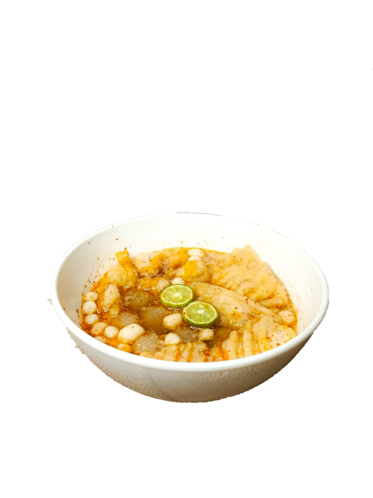
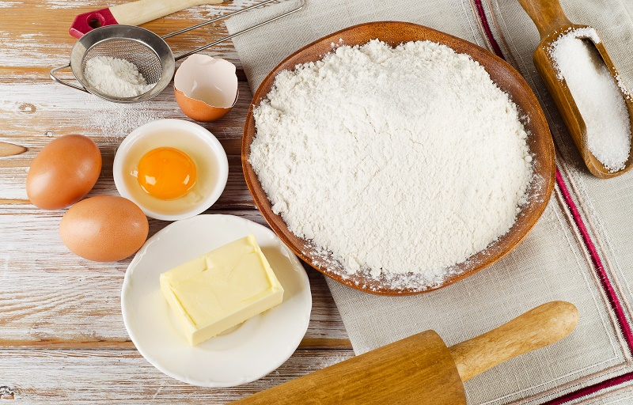

Baci Pemuda
Cari Baso Aci yang enak disini tempatnya
Cari Baso Aci yang enak disini tempatnya
Kata 'Baci' berasal dari singkatan "baso Aci" dan kata 'Pemuda' Berasal dari nama lokasi Dagang yaitu di Jl.Pemuda. Baso Aci ini cukup populer di kalangan remaja karena harga Yang murah sehingga tidak menguras kantong bahkan untuk pelajar.Bakso aci merupakan salah satu jajanan terkenal asal Jawa Barat. Teksturnya yang kenyal karena terbuat dari tepung sagu ini biasanya menggunakan topping ceker, ayam, tahu dan pilus.
200 gr tepung sagu, 5 sdm tepung terigu, 150ml air hangat , 1 sdt garam+penyedap, 2 sdm minyak goreng , 1 liter air untuk merebus 1 porsi
